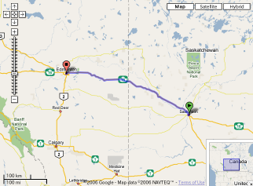
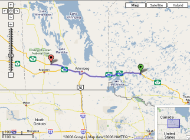
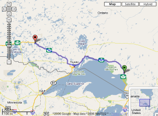
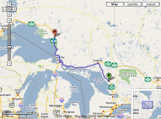
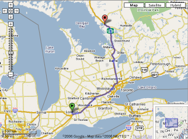

12/31(Sun)
-
2006 年さいごの日
- 今年はどんな一年だったかなぁと振り返る余裕もない今日この頃。
もともと出不精で定在指向な人間が、何でこんなに風来坊な人生を
送ることになってしまったんだろうな。
- 今年はじめたことは、時計
(cf.5/10/2006)。
金持ちじゃないのでコレクターじゃない(なれない)。
もともと機械式が好きなんだけどその機械式はメンテが必要で、
自分でメンテできるようになりたいという気分
(cf.2/20/2003)。
あとガラを動くように再生する位の腕になりたいなぁ。
今回の引越しでは、気に入ってて使える 2 本
(seiko 6139 と citizen 8110A) だけ手元に残して後のお宝(ガラ)は
container の中。
- 3/15/2008:
「時計職人」＝「自立性」＝「研究すること」と「ガーゼ職人」。
-
大晦日に買物に出かける
- それらしい食料が欲しいということで、大晦日も普通に営業している
T&Tに。
- 隣接のレストランで腹ごしらえしする。
悪くなかったけど、そんなに安くもない。次はもう一つの店に入ってみよう。
- 食料の他に、きちんと仕事をするために
(cf.1/1/2007)、
外付け HDD を一基買うことにした。(container の中に一杯あるんだけど…)
320GB で \$159.99 なり。
-
[phys]
AIP 系(と思ったけど、リストには無いな)
のある雑誌から査読依頼のメールが突然来た
- どうせやることも無し(とは言え、お仕事は残ってるんだが)、
リハビリもした方がいいし、受けることにする。
出来れば 2 週間で、遅くとも 2 ヵ月で、とのこと。
- 何のどういう経路で私の名前が出て来たのかは知らないが
(その雑誌に論文出したことはない)、
研究者にとっての一種の community service な訳だし、
声をかけてもらったことに感謝。
- 前に、オランダに行った直後くらいに、
別の、これも論文を出したことのない雑誌
(J. Rheology)
から査読依頼が来ていたことを、
その一年以上後に知った。(郵送で原稿が京都に送られて、
それが広島の実家に転送され、そこで埃をかぶっていた。)
後でメールで editor (の秘書さん) 宛に、一応、謝罪とアドレス変更を知らせた。
ちなみにその査読依頼は、おそらく著者が想定される referee に名前を入れたのだろう
と想像される。
- 1/1/2007: printer 購入
- 1/21/2007:
結局下りることにした
-
[TV]
Snow Dogs (2002)
12/30(Sat)
12/29(Fri)
- さすがのカナダも今日が今年最後の営業日
- 店とかは正月以外、土日も空いてるとは思うが、
いわゆる office の類は週末に入るので今日が最後。
ちょうど 3 日間の正月休みみたいなもんか。
-
カーペット・クリーニング、その後
- 今朝、 office に電話を入れる。文句を言うと曰く
「リスケジュールされた。来週の金曜日」と。
こちらに何の知らせもなく、文句を言ったらこう言うという態度に頭に来る。
が、怒っても物事こじれるばかりなり。人間の度量が問われ続ける今日この頃。
- 1/5/2007:
業者が来る
-
健康保険、その後
- 3/1 までカバーするための private plan を探し続け電話をかけまくったが、
どうも皆さんの意見を総合すると、 provincial plan の代わりになるような plan はない
(法律で禁止されていると言ったブローカーまで居た)。
あるのは、 provincial に上乗せする plan ばかり (救急車とか薬とか dental とか、
provincial でカバーされない奴に対して)。
- 大学の学生用の plan は (UWO 経由の UHIP のように) 存在するみたいだが、
あいにく私はまだ雇用されていない、つまり大学とは無関係な人間なので、どうしようもない。
おまけに、大学 (U of A) はクリスマスから元旦まで休みなので、
何か聞こうにも年明けまで待たなければならない。
- provincial が有効になるまでの waiting period 用の plan としては
visitors plan というのがあるが、そいつは基本的に emergency に対するもので、
既往症は一切ダメ。(それじゃ、意味が無い。)
しかし、何もないという状況も問題なので、
一応一番安い plan で 1 月と 2 月分を買っておいた。\$69 なり。
-
はじめての電話の bill が届く
- が、日本にかけた long distance にめちゃくちゃ高い料金 (\$1.50 / min)
が課せられていたので、早速電話を入れる。
(cf.12/20/2006)
- 状況を一通り説明したら、すんなり了解してもらい、料金再計算して、
件の long distance 代 (20 min 通話) が \$30 から \$1 に修正された。
めでたしめでたし。(というか、これが本来あるべきものなんだけど、まぁいずれにせよ。)
-
[TV]
- [news]
TV でサダム・フセインの死刑が執行されたと言っている
- ずいぶんと迅速な執行で、正直、驚いた。
イラク国内の問題として処理されたというようなことを言っている。
控訴とかそういうシステムはなかったのかな、というのが素朴な疑問。
12/28(Thu)
-
カーペット・クリーニング
- この部屋はペット可で、どうも前の入居者が犬を飼ってたようで、
絨毯に犬のおしっこの匂いが付いていて、 landlord にクリーニングを依頼していた。
昨日、「今日の 9:01am - 4:00pm に来る」という知らせが来て、
今朝はきちんと早起きして、絨毯領域を全部空けて、昼過ぎまで待ってたけど誰も来ず、
事務所に出かけるけど勝手にやっておいて、と言って出かけた。
- 諸々終えて 6 時前に期待して帰宅したがクリーニングの形跡無し。
頭に来て、急に疲れが出た。事務所に電話するが既に人はおらず、
代表番号に回されて、一応苦情を言って、再度要請しておく。
- 12/29/2006
- 1/5/2007
-
健康保険 @ alberta
- alberta 州の健康保険は
AHCIP と言う。
こいつ、 ontario 州の OHIP
(cf.10/14/2004)
と違って、 dependent も無条件にカバーされる。
- ただ、移行期間が 3 ヵ月あって、すぐに有効にはならない。
幸い、前の plan (私の場合は OHIP) がその分を後ろに延長されるので、問題ないらしい。
- ただし、上述の通り、妻は private な plan を買っていた訳で、
その分はこちらで手配しないといけない。
- ちなみに office は昨日までクリスマス休みだったけど、今日からは平常に戻ってて、
あとは元旦が休みだけ、と張り紙してあった。全然チェックしてなかったので、
今日うごいてラッキーだった。
- 11/9/2007:
新しい work permit を見せに行く。
12/27(Wed)
- [blog][千夜千冊]
「第千百六十七夜 2006年12月27日 西郷隆盛語録」@senya(lc)
- 引用、その１
残念とは念が残ることをいう。
一篇の詩を紹介しておきたい。
読めばすべてが伝わるだろうと思う。こういうものだ。
私に千糸の髪がある
墨よりも黒い
私に一片の心がある
雪よりも白い
髪は断ち切ることができても
心は断ち切れまい
- 引用、その２
話はかんたんである。西郷が鹿児島に帰って何をしたかということだけだ。
…
西郷は何事かの継承と伝達のために、心底、遊べた。それが「私学校」というものだった。
- 5/17/2006:
福澤諭吉の書く西郷
- 5/3/2004:
勝海舟の見た西郷
- 郵便の転送
- 出来るんだろうなと思ってたが、やっぱり出来た、
internet で。
- 料金はどうも 6 ヵ月まで \$35.00 (税抜き) なんだそうだ。
今回は今の家に 6 ヵ月間の転送を申し込んだ。
- 前回は知合い宅に 1 ヵ月だけ転送させてもらってたが、
それは temporary と言う奴で \$31.50 (税抜き) だったのかな。
あと、国外にも \$70.00 で転送してくれること発見。
- 4/29/2007:
アパート引き払いに伴う郵便の転送。
- [news]訃報
12/26(Tue)
-
boxing day sale 参戦
- ある問い合わせ
に対して返事が来て、どうももうしばらく
苦しい日々が続かざるを得ないようだ。
まぁ果報は寝て待てってことで。
- なので、この仮住いでも soho 環境を
また確保した方がよい。
つまり現在、我家の唯一の PC である TP-R60 を私専用にする必要がある。
ってことで、家の人用に何か安い PC を買おう、という結論に達する。
無論、「我々は貧乏人」なので、
セールで一番安い laptop にする、ということで。
- internet 版の boxing day sale をいくつか見たところ、
一番安い laptop は \$549.99 とか \$599.99 あたり。
その辺を頭に入れて、昼前に店に出かける
(今すぐ手に入ることがもう一つの重要なポイントなので)。
boxing day sale は普通早朝 (朝の 7:00 とか) から始まるものなので、
最安値のブツはあっと言う間に品切れの可能性もあるなぁ、と思いながら。
- first stop は
bestbuy,
人が多い……展示品の値札を見ると、一番安いのでも \$899 とか。店員もつかまらないので、
早々に諦める
- second stop は
futureshop,
bestbuy よりも人は少なめ。展示品を見ると \$499 なるブツがある。
店員を捕まえて在庫があるか聞くと「ある」とのことなので、即決。
- ちなみに、考えていた third stop は circuitcity
(the source) だった。
行かなかったけど。
- 決めたブツは
acer
の
travel mate 2480-2247(lc)
- これまでの notebook 歴
に追加しておく。
- ってことで、家の人には一日遅れでサンタさんがやって来たことに。
さて私のところにはいつサンタが来るんだろうなぁ
(そういう店をまわって CD とか色々誘惑されたが、
何も買わなかった。)
- 10/6/2007:修理依頼。
-
[TV]いくつか。
12/25(Mon)
- [news]
「ゴッドファーザー・オブ・ソウルことジェイムス・ブラウン、73歳で逝去!」@yahoo(lc)
-
[TV]
Samantha: An American Girl Holiday (2004) (TV)
- 子供を労働に使うことが普通だった社会。
やっぱり「既存の枠組の中で最適化を目指している」人にはなりたくないと思う。
- 1/11/2006:
oliver twist
- 12/30/2005:
Tuesdays With Morrie
-
日記のサマリーを作ってみる
- この日記では、過去の記述への link を積極的に張ることで
健忘症に陥らないように(時の流れに翻弄されないように)しようとして来た。
- 人生 40 年近くたってくると、ニュースも週刊誌と同じで、
蓄積も進歩も反省もないその日暮らし的なネタの繰り返しだと感じて来る。
自分の考えも、ただ日々を過ごしていると同じで、昔思ったことも簡単に忘れる。
それに抵抗しようとする方法の一つ。
- 4/15/2004:
きちんと自分で link を張ること
- 7/2/2004:
検索できないコンテンツは存在していない？ (梅田望夫)
- 5/21/2007:
google八分の話(fujimotoさん)
- そういう過去へのリンクを張っていると、当然、同じテーマで沢山のリンクが
まとまったりしてくる。書いている本人はまだ自分の頭の中にある記憶をたよりに
そういう緩い繋がりを手繰り寄せることができるけど、読んでる人にはただ散漫な
記述の羅列に見えるだろう。それを少しでも改善しようという意味もある。
- 少し、「ユーザー・フレンドリー」を意識しようかな、と思っているところ。
(過剰にならないように気を付けながら。)
- 今のところは日記中にまとめてた link 集を移動した程度。
- 5/19/2007:
ユーザー・フレンドリーは難しい
- 日記のまとめの別のアプローチとして
定理ってのもやってる。
今は chronological に並べてるけど、こっちも意味的に再編集した方が面白いな
- サマリー：日記を書くということについて。
12/24(Sun)
- 明日はクリスマス、メリー・クリスマス
- 買物
- 明日は町は機能停止してるだろうし、その翌日は早朝セールでバタバタしてるだろうし、
というので買い出しに出かける。
- edmonton に来てから気になっていた
west edmonton mall
に入ってる中華スーパーの
T&T
に行ってみる。ここ、最高だった。しばらく食材には困らないだろう。
12/23(Sat)
- ネットワークも落ち着いたことだし、
放置していた、返事を書かなければならなかったいくつかのメールに返事を書く。
-
ダウンしていた blosxom に対応
- と言っても、やったことは log を引き上げて、データの掃除をしただけ。
- 12/22/2006: ダウン
12/22(Fri)
-
internet 開通
- 12-2 の time window で来るという約束。
1 時過ぎてやっと電話。でも来てからは速攻で 1:45 pm には完了。
- 12/18/2006 以来、ネットもテレビもない生活を
余儀なくされた訳だが、時間の流れ方というか、時間の存在を強く感じた。
やっぱりテクノロジーは人間を生産的にはしていないと思う。
折しも、 local newspaper の記事に、
「親の blackberry という携帯端末の abuse に子供が怒るの図」ってのがあった。
- 一部少数読者を心配させているかもなぁ、と少しサービス精神を出して
(もうすぐクリスマスだし)、本日分まで update し、早速に upload する。
- blosxom がまたおかしなことになってるなぁ……どうしたもんか
- これで、この当座の家のインフラもやっと整った。
12/21(Thu)
-
買物
- 腰痛の原因の一つは床に座ることではないか、ということで、
簡単な椅子を買いに行く。
まず canadian tire で物色。
パイプで背持たれ無しの丸椅子、ビニール地のクッション・タイプが \$10,
木のタイプだと \$20 なり。
普通のパイプ椅子、同じくビニール地が \$10, 布地だと \$20 なり。
簡易テーブルの類は品薄なのか、ない。
たまたま隣にあった home depo も覗いてみるが、
パイプ椅子、座るところと背持たれがプラスチック製のもので \$20 なり。
折り畳みの簡易テーブル、テーブルトップがやはりプラスチック製で
\$80 くらいだったかな。白いプラって不潔に感じるし、黙って出る。
で、全カナダ最大という噂の
west edmonton mall
に行く。そこの jsky という店が目当て。
ちょっと高そうなまともな furniture がメインだけど、片隅に売出だった
木製の折り畳み椅子を発見、 \$15 なり。白と黒の二種類で、黒を二脚抱えてレジに。
当座の食卓兼仕事机として簡単なテーブルも探してたんだが、高い。
カラス・トップの computer desk が \$70 であって、どうしようか迷ったが、
無理して今買うこともないので、保留。
- あと、安いテレビを一台買おうと bestbuy へ。
液晶の \$300 に心が揺れるが(第一、小さいし)、「我々は貧乏人なんだ」と唱えつつ
\$82 の名前を聞いたことのないメーカーの 13 inch の丸いブラウン管のテレビを買う。
音楽環境も改善したいとしばらく computer 用のスピーカー・コーナーをさまよって、
\$50 とか \$80 とかで手には入るのか、とかなり心が揺れるが、再び
「我々は今、貧乏なんだ」と唱えて物欲を押え付ける。
- 今日の食事用に 近くの KFC でまた coupon を使う。
-
お金
- ここのアパートのポストに来た記念すべき最初の私宛の郵便
が、
UWO の Appl. Math. から来た pay-check
(cf.11/24/2006)
だった。
(12/13/2006 にメールで住所を知らせていた。)
- 読書
- 手元にある唯一の雑誌 physicstoday の 10 月号を読んでいる。
- 素粒子論批判の記事を読みながら、
天体屋の石頭に呆然とし物理屋はましだと思ったことを思い出し、
ふと、では流体屋(一応私も含む)の Navie-Stokes 主義はどうなのか、と自問したり。
12/20(Wed)
-
長距離電話、契約
- 昨日紹介された日本への長距離プラン
(\$4.95 + \$2.95 で 5c/min (携帯へは 35c/min))
は、やはりないと不便(その場合、日本へは \$1.50/min だそうで)
ということで、そいつをお願いした。
で早速、広島に挨拶を入れておく。(本当に割引されてんだろうな)
- 今日の食事
- 朝はパンと wasa にチーズをぬって食べる。
- 昼食は昨日買って来た豚肉を切って片栗を付けて揚げて醤油とみりんで味付けしたものと、
遠路運んで来た玄米(sweet rice だけで挑戦)。うまくいった。これで繊維不足解消かな。
- 夕食は軽くりんご(ふじ)とヨーグルト。
- [phys]
twobody
- 書類の類は、これ以外は全部「引越し荷物」のコンテナの中。
その唯一手元にある書類を眺めつつリハビリ。
- プランは
- 1) 彼の code と結果の web 作成。
- 2) 一連の論文に対する正誤表をまとめる。
- 3) mobility 関数(の未発表部分)の計算をまとめて論文にする。
- 4) 気液、液液系の関数。
- 1 と 2 までは頭を使わない。そこまででリハビリを完了させよう。
その後はどこまでいけるかな?
- まずは 1 に手を付ける。
- 1/4/2007:
1 と 2 の alpha version
-
待つことが、実は一番苦しいことだ
- と最近感じている。そして
「侠とは時を食むものなのである」
(7/25/2006)
と呪文のように毎日つぶやいている:
いたずらに騒がない。
いたずらに他者に文句をつけない。
従うべきものに従っている。
それでもつねに研鑽を怠らない。
そのうえで、いずれ時がやってくるのを待機する。
- あと最近のもう一つの心の支えは、
梅原猛さんが評した
故白川静さんの人柄:
曲がったことが大嫌いで、
質素で、
奥さんが大好きで、
孤立無援でも悠然としており、
恩義を人一倍感じる人だった。
この中では、もちろん三行目が一番気に入っている。
- 付記: 「侠」と書いて何と読むんだろう? 訓読みはなに?
国語辞典が手元にない不便さよ
- 12/26/2006:
もっと待て、と
- 1/22/2007:
自由契約の野球選手
12/19(Tue)
-
電話開通
- 運動不足で荷物運びをしたせいか、やわらかい空気ベッドのせいか、
今朝起きたら腰が痛い……
もともと丈夫な方なんだけど、さすがに年か。
- 12-5 の time window ということで、暗くなってからかもと思ってたが、
2 時過ぎに来て、配線をいじって、無事電話開通。
どうも前の住人は cable 会社の電話を使ってたようで、
外から来てた線はモジュラーに継ってなくて、
寝室との室内配線だけが継ってた状態。
多分、寝室のモジュラー・ジャックの一方に cable (か internet) から
電話に変換した電話線をつないで、もう一方とメインのジャックのどっちからも
そいつが使えるようにしてたんだな。
- 一息ついて近所のモールへ買物。
銀行がちょうどあったのでお金の移動など。
住所変更は住所を証明する書類が必要なんだとのことで出直し。
- 帰宅して夕食、今日は sun dried tomato source のミートソース・スパゲッティ。
マッシュルームを買って来なかったけど、うまく出来た。
やっぱり家できちんと食べるのはよい。(テーブルはないけど…)
はやく玄米を食いたいが、sweet rice しか手元に残ってない。
asian food の食材を調達できる店を探さなければ。
12/18(Mon)
-
アパートに入居
- 11:00 am 前にホテルをチェックアウト。
これでしばらくはネットワークから切り離される生活だ。
- その足でアパートに向かう。
12:00 pm 以降入れるという話しだったが、
書類にサインなどしていたらちょうどよい時間だった。
- 2:00 pm 車に積んでいた荷物をとりあえず全部部屋に運んだ。
3 階建ての 3 階、エレベータなし、ちょっと辛かった。
車も大変だった様子。軽くなって、やっと普通の乗用車にもどった。
- その後、一息ついて、ケーブル(internet)と電話の手配。
前者は金曜、
後者は明日できるって。
- その後さらに一息ついて、車から出て来た米を炊いて、
これも車から出て来た食い切れなかった韓国ラーメンを作って、
久しぶりに家での食事。
- これからしばらく寝ることになる空気ベッドを膨らませる。
がポンプに少しガタが来てるせいで、最後の一息が甘い。
- 経過
12/17(Sun)
12/16(Sat)
-
電話、インターネット、TV
- local な電話会社は
telus で、ケーブルは
shaw らしい。
(london は
bell と
rogers だった。)
なので、インターネットは実質この二つの選択ということになりそう。
- web で情報収集してみたが、
bundle の discount がいまいち分からなかった。
自宅電話はまぁ必須だろうと言うことで、
telus に電話してみる。
(どうも digital phone という option が shaw にもあるらしいが、
VOIP という技術をきちんと理解できてない…)
- 住所を言っていろいろと契約しようとしてたら、
line が生きてないので工事が必要と言われる。
可能性としては前の住人が vonage とか shaw とかの、例の VOIP の
ジャックを取り付けているかもしれないと、ねーちゃんが言ってた。
landlord に確認をとるべきだと言うことで、
月曜まで待つことにする。
- 12/18/2006: 電話注文
- 12/19/2006: 電話開通
-
今日のブランチは KFC
- [TV]いくつか。
- elf (2003)
- 公開された頃のテレビの宣伝の印象ではおもしろくなさそうだったけど、
けっこうよかった。
- corinne bailey rae (austin city limit)
12/15(Fri)
-
大学へ
- ようやくこちらでの新ボスときちんと対面してしゃべる。
- ここの position は実は faculty 扱いらしい
(故に事務手続きにより手間がかかってるらしい)。
その分、責任も大きいわけだが、グループの運営方針が比較的おおらかそうなので安心。
(もちろん、言ってることとやってることが一致しない場合も少なからずあるけれど、
少なくとも建前的には私の個人的な指向と向いてる方向は同じなので)
- そういえばあのとき、
そういう質問をされたな。そん時はどんなこと聞きたいんだろうと思った
(けど、まぁ結局は自分が思ってることを率直に言ってしまった訳だが……
正直さは、数少ない自分の取り柄だと思ってる。)
- このグループでの big picture としての究極の狙いについても少し話す。
むろん、この辺りの話しは数年のオーダーではなくて、ある意味 life work の類だけど。
- 書類手続きの停滞の真相は、どうも最初の申請の後に何か生じたらしく再申請して云々
という出来事があったためらしい。ということで、私が働き始められるのは
年越ししそう。そのころには
例
の結果も出るだろうし、
その時点でまた決断をしなければならない
(なによりそのときまでオゼゼは一切出て来ない……)
- 1/17/2007: 書類が届く
-
今日のブランチはホテルの東隣にある
east side mario's
- どうもこの店のシェフによるのか、私は
前と同じものを食べたけど、
かなり london よりも落ちる。
-
OLGA
(the online guitar archive)
が文句を言われているらしい。
- chord はグレーゾーンだと思ってたが
(山下邦彦
は確信犯としてこの立場をとっていたと思うが)
- と思ったら、文句を言ってきてる人達は楽譜屋さん系なのかな?
national music publishers' association と
music publishers' association
- 12/17/2006:
モーツァルトの楽譜全集をオンラインで無償公開
12/14(Thu)
- 大学へ
- 今日は新ボスが旅から戻って来るというので、昼前に出勤。
が、なにやらお客の接待かなんかで忙しそう。
明日朝話そうということに。
- ちなみに、事務手続きの方は進展無し。つまり無職状態がずっと続いているということ。
-
ホテルに戻る車の中でラジオ
(ckua)から流れて来た曲
- 何だったっけぇと口ずさみながら、 definitely に聞いたことがあるんだがと
うなってたら、 dj のおねえちゃんが jamiroquai
(cf.4/9/2002)
だと教えてくれた。んだんだ。
- あと流れてきて気になった曲
- で、久しぶりに amazon を覗いてみる
- Smile/Jacky Terrasson with Sean Smith, Remi Vignolo (b) Eric Harland (d) (January 7, 2003)
-- "smile" が入ってる。
やっぱ、どうも皆 smile がすげえと思ってるようだ。
(cf.7/31/2006)
- Live in Tokyo/Brad Mehldau (September 14, 2004)
-- 最近のお気に入りの一曲 "Things Behind The Sun" が入ってる
- Day Is Done/Brad Mehldau (September 27, 2005)
- Shades of Jade/Marc Johnson with John Scofield, Elaine Elias, Joey Baron, Joe Lovano (September 13, 2005)
- Saudades/Trio Beyond: Jack DeJohnette, Larry Goldings, John Scofield (June 6, 2006)
- Metheny / Mehldau: with Larry Grenadier and Jeff Ballard (September 12, 2006)
- Out Louder/Medeski Scofield Martin & Wood (September 26, 2006)
- まぁいつも
のように貧乏人的保守的な pick-up だけど、
音楽家のみなさんも一杯仕事をなさっていらっしゃる様子。
(というか、この john sco の activity は凄いな。)
- しかし何で amazon は personnel を書かないんだろうか?
それが一番気になるのだけど(時によっては曲目よりも)
- 12/26/2006: 無駄使いしなかった
12/13(Wed)
-
家探し
- 朝 10 時過ぎ、アパートを管理している事務所から電話がきて、審査をパスしたとのこと。
めでたく edmonton での住処が出来た。入れるのは月曜日。
- なので、ここのホテルの滞在をさらに 4 日延ばしてもらう。
(むろんクリスマス・キャンペーン料金で。)
- 12/21/2006: pay-check 届く
- 一つ大きなプロセスが片付いたので、
のんびりとホテルの隣の family restaurant で昼食をとる
-
引越し荷物
- 11/30/2006
以来、放置していた(というか手を付ける余裕のなかった)引越し荷物、
こちら edmonton の会社に連絡を取る。
- 曰く、数日前にコンテナはこっちに着いたのだそうだ。
一月は保管してくれるので、しばらくは大丈夫。少し安心した。
- 経過
- [news]
「所属全研究者に「連座制」適用 研究費不正対策で文科省」@asahi(lc)
- 引用
各機関に研究費管理の専門部署と統括責任者を置き、
研究費の使用ルールと運用実態の食い違いをチェックする「不正防止対応計画」づくりを求める。
不正の温床となる業者と研究者の癒着を防ぎ、
カラ出張ができないように研究者の出張計画の実施状況をつかむ仕組みや、
不正の告発を受ける窓口の設置、内部監査の充実も要請する。
- 11/14/2006
に付け加える感想もないけど、
「文部科学省(の有識者検討会)」は研究者に研究してほしくないとしか思えないな。
「不正使用」を無くすために研究のために融通を効かすことを排除するのは、
結局のところ、研究に対するお金の効率利用につながらないと思う。
12/12(Tue)
-
家探し、二日目
- 昨日から方針変更、
当座 (4 ヵ月程度) の住処として、アパート込みで探して、
本格的な「家探し」は、落ち着いてからぼちぼち行く、というアプローチ。
- 12:00 pm から一時間おきに、昨日の一軒家プランの一つを含め、
その後 3 つの物件を見て回る。
- 結局、最後の物件にしぼって、 application と手付けを出しておく。
あちらの審査が通れば決まる。(つまり、通らなければ、また振り出しに戻る……)
- 経過
- 12/26/2006:
仮住いながら環境設定
- 3/8/2007: 家が決まる
- 夕食は hotel のあるブロックの中の北西の角にある denny's に行く。
- [news]
「＜ウィニー裁判＞元東大助手の金子被告に有罪判決 京都地裁」@yahoo(lc)
12/11(Mon)
- 大学へ顔を出す
- 事務手続き、一つはっきりしていることは、一番肝心なプロセスが
雇用決定の時点
からずっとこちら側に帰って来てないので、
何も進まない(進めない)状況。
私が物理的に edmonton に来ても、状況に変化はない。
-
家探し、一日目
- 大学でやることもないので、午後は家探しに専念。
- 新聞から物件を手当たり次第 pick-up して、部屋を見せてもらうアポをとる。
結局連絡がついた 3 件を見て回る。
- 最初の物件は、一軒家。小さくて古い家で、断熱が弱くて光熱費が少しかかりそう、
とのこと。ポーランド系のおじさんが改修の真最中であった。
私は悪くないと思ったが、相方は no らしい。
ちなみに既に 10 件 application を抱えているとのこと。
- 2 件目は、きちんとアドレスを聞かずに ad の交差点情報だけで行って待ってたんだが
出会えず、右往左往するが、携帯の威力もありなんとか巡り合えた。
(問題は奴らにあって、交差点の通りが間違いだった。ったく……)
ここは上下分割の duplex で、下(半地下)の方。
短期契約はないらしく、見送り。
- 最後の物件も家だったのだけど、
近くの町の雰囲気が圧倒的に悪くて住むべき場所ではないということになり、見送り。
- 12/12/2006: 二日目
- 夕食は hotel の通りをはさんで向かいにある arby's でバーガーを二つ(一人一つ)。
- [news]
「＜学術会議調査＞研究機関の１２．４％が論文などで不正」@yahoo(lc)
- 引用
調査を実施した同会議科学者の行動規範に関する検討委員会の浅島誠委員長は
「０４年の国立大学法人化の前後で不正が増えたのは、
隠されていた事案が表に出たことに加え、
研究資金の獲得競争やポストの任期制導入で研究者が追い詰められ、
過酷な環境にいることも背景にあるようだ」と話している。
- さも「研究者が追い詰められ、過酷な環境にいる」から「不正が増え」るような
言い方を、それも「背景にあるようだ」なんて言い方をしてはいけないだろう。
- 研究という活動が、
ビジネスの世界(というか現実社会と言うべきか)化しないで欲しいと思う。
人間が作った「ルール」の穴を突くことで他者に対して優位を築くような姿勢を
増長させるようなことを。
- こういう部分(不正調査)に科学的アプローチを何でしないんだろうか?
誰のどの論文が「多重投稿」や「データ改ざん」「データねつ造」「研究の盗用」
に当たるのか、という類の生データを公表するということ。
(公表されてんのかな?)
12/10(Sun)
-
ホテルの移動
- ダウンタウンが、というよりも、ここのホテルのパーキングの
(特に夜中の)セキュリティに不安を感じ、
普通のモーテルに移動することにする。
幸い、クリスマス・キャンペーン料金の \$69.99 per night で取れたので。
- 7:30 am 起床
- ロビーから「コンチネンタル・ブレックファスト」
(つまりはパンと飲物だけドンと置いてある朝食)
を部屋に取ってきて、まずは腹ごしらえ。
- 11:00 am check-out
- 12:30 pm check-in を試みる。
普通 3 時くらいからなんだけど、
こういうのは部屋の準備が出来てたら結構融通をきかせてくれるものなので、
出来たらラッキーだなと思って行ってみたら出来た。
今日から 4 日の家。
-
今日の昼食兼夕食
- ホテルのブロックを一通り歩く。
mac, pizza hut, KFC, denny's などがある。
今日は KFC をチョイス。
- 12/16/2006: その２
-
[blog]
「「ウェブ人間論」立ち読み部分」@mochio(lc)
- 数日前に、ホテルから読んだ記事。
- 平野さんの言う日記の五種類の分類、
自分の書いてるものはそのどれに相当するんだろうと思ったりする。
- 多分、1 を指向している 3 かな。
(4 も入ってるかな? ネットとリアルの人格は同じでありたいと思ってるけど。)
- 1 を目指すなら書き方を注意しないといけない部分もかなりあるんだろうな。
もともと内輪受けは嫌いだし、おもねって書くのもみっともないと思うし、
自己顕示欲の塊みたいなのも恥ずかしいし、難しい。
まあコミュニケーションのスキルが低いってことなんだろうけど。
12/9(Sat)
-

day6: saskatoon, SK to edmonton, AB 528 km
- 7:00 am 起床、風呂にのんびりつかる。
- 7:30 am 朝食を取りに lobby へ
- 家のモーテル朝食マニアの人も、今日はワッフルがまだあったので満足そう
- のんびり食って、出すもの出して、メールチェック(今時のモーテルは
大抵 wireless が使える(し、そういう所を事前に探しているのだが))などをしてたら、
9 時過ぎた。
- 9:41 am saskatoon のホテルを出発
- 10:00 am langham でガソリンを入れておく
- 11:10 am north battleford 通過
- 11:58 am → 10:58 am alberta 州に入る。
地面の起伏が出て来た。
timezone が変わる。
- edmonton 着
- まずは CAA に立ち寄って(ここでは AMA とか言うみたい。
alberta motor association)
当座の宿情報をゲットしようとする(例えば、長期プランで安くならないかとか)。
しかしほとんど助けにならず、
- 夕食
- jasper st という通りをぶらついて夕食を探す。
昨日のおいしかった vietnamese が頭に残ってて、
wok box なる多国籍アジア・ファストフード店に入ってみた。
チェーン店なのかな? その店のコックは黒人の人。
チャーハンとタイ・ヌードル・サラダというのを頼んだ。
ホテルの部屋で早速食べてみたが、サラダに入ってた麺はゆでてない生。
これはそのコックが間違ってるのか、店のレシピが間違ってるのか、
我々の感覚が間違ってるのか (と言いながら、空腹に負けて全部平らげたが……)
まぁアメリカ人はクッキー・ドウを焼かずに食べたりするわけで、
「これ」が彼らの正しいレシピという可能性も捨て切れない。
- 8/13/2008: サヨナラ会。
- ということで、ドライブ・モード終了宣言
12/8(Fri)
-
 day5: neepawa, MB to saskatoon, SK 594 km
day5: neepawa, MB to saskatoon, SK 594 km
- CAA の本に何の記載もなく、 check-in の時に何の説明もなかったが、
朝食は提供されていた
- 造作ないトーストとコーヒーだけなんだけど、
ただであるだけでうれしくてニコニコする人がいる。
- 8:52 am neepawa 発
- 10:30 am russel 着
- manitoba 最後の町。
ガソリンを入れて、レストランに入る。
ちょうど朝食と昼食の間の時間だったけど、昼食メニューを出してくれる。
- 11:30 am russel 出発
- saskachewan 州に入る。
manitoba との違いがあまり感じられない(何で分かれてるの? という素朴な疑問)。
高速沿いに店が存在するようになった。
- 12:30 pm yorkton 通過
- saskatoon 着
- downtown の confort inn に泊まる。
- 6:00 pm 夕食の出前が早速来た
- これ、最高にうまかった。
nha trang restaurant というベトナム料理レストラン、
\$20 以上で配達してくれるというので、以下三品を頼んだ:
- special fried rice \$10.45
- ck salad \$6.45
- coc tofu with vegi \$7.45
- total \$25.81 で tip を \$3.50 付けて \$29.31 なり。
- 8/13/2008: サヨナラ会。
12/7(Thu)
-

day4: dryden, ON to neepawa, MB 552 km
- 8:30 am ホテルで朝食
- 一人当たり \$5.75 までの食券をもらってて、まぁそれなりに食べたはずだったが
\$10 近く払えと言われて焦る。
\$5 と \$4.50 くらいの食事とコーヒーの飲物で、いくら税金が高くても \$20 に何か
なるはずないのに、レジのねーちゃんはメニューをとったおばちゃんの出した total が
おかしいかも知れないという感覚を全く持たない様子。
自分も最近は暗算は苦手で具体的な数字が出て来た時点で思考停止気味だけど、
大雑把な数の感覚ってのを持ってないんだろうな。
紆余曲折の末、 \$3 ちょっとの支払いに落ち着いた。
- 10:00 am hotel 出発
- dryden の町で食糧の調達、ガソリンを入れて、出発準備。
- 大きなトラックがメインの通りに出ようとしてて後ろのコンテナ部分が傾き、
立往生していたため、 thunderbay 方面の車線が塞がれている。
(上下一車線づつしかない。)
店で食糧を調達した後見たら警察が来て、上下の車の誘導をしていた。
- 10:45 am dryden 出発
- 12:00 pm kenora 通過
- 12:53 pm manitoba 州に入る。
-
急に地形が平坦になる。見渡す限りまったいら、道もまっすぐ。
と同時に、高速沿いに一切の店を見なくなる(見える範囲にない)。
どうもガソリンを入れるにもちょっと高速を下りて走って行かないといけないみたい。
- 2:10 pm winnipeg に入る
- 3:17 pm winnipeg のバイパス終了。ガソリンを入れて出発。
- 4:00 pm portage la prairie 通過
- 5:00 pm neepawa 着
- 8/13/2008: サヨナラ会。
12/6(Wed)
-

day3: wawa, ON to dryden, ON 810 km
- 10:00 am hotel 出発
- 食糧など調達のため wawa の町に立ち寄る。
- 10:30 am wawa 出発
- 12:30 pm marathon 着
- A&W でハンバーガー、コーヒー、ポテト
- ガソリンを満タンに
- 1:00 pm marathon 出発
- 3:00 pm nipigon 通過
- 4:15 pm thunder bay の information center に立ち寄る
- 天候が clear ということを確認して、もう一歩進んでおくことにする。
- 初の夜間ドライブ
- 8:15 pm dryden 着
- ホテルの部屋でほっと一息ついて時計を見たら、 time zone を越えたようだ。
なのでまだ 7 時台。
- 8/13/2008: サヨナラ会。
12/5(Tue)
-

day2: parry sound, ON to wawa, ON 681 km
- 9:18 am parry sound を出発
- 昨夜、やっぱり積雪があり、おっかなびっくりの出発。
だけど高速は(2車線の部分はメインの方だけ)除雪はほぼ完璧で、
だんだん慣れて来て、しまいには普通の運転になっていった。
- 11:00 am sudbury 通過
- この後途中で wendy's によってトイレと昼食の購入。
- 2:30 pm sault ste. marie 着
- 5:15 pm wawa 到着
- 目指す mystic isle motel は入口を一回ミスって、高速を U ターン(!!)して、
高速から続く急な坂道(除雪なし!!)に衝撃を受けつつも、
しかし canadian tire お墨み付きのまだ一年は走れるスノータイヤの威力抜群で
(ちょっと冷汗をかきながら…)登り切ったら、車が一台も止まっていない
とても閑静なモーテルであった。
- 7:00 pm truck stop restaurant and convenience の衝撃
- ホテルで食事の場所を聞いて、一番近かったので試してみたが、近年まれにみる最悪なもの。
思うに、本当の owner は florida あたりにでも行ってて、
留守番係のバイトの若者がテキトーに冷凍食品を温めていると言う感じ。
(それにしても、もっとうまく出来るはずなんだけれど……)
- 競争の全くない、ど田舎の恐怖というものを身を持って体験した、というところかな。
- 8/13/2008: サヨナラ会。
12/4(Mon)
- 出発準備
- CAA に入る
- 9:30 am
cherryhill mall へ行き、
CAA 入会
- AAA
と同じで、入会したら地図とかいろいろもらう。
今時は出発点と目的地を言っただけで tour の詳細を booklet にしてくれた。
まぁ google maps みたいなもんだけど、カラー印刷の即席 booklet には
何か感動した。
-
郵便の転送
- 出発準備、続き
- 向かいの shell でガソリン満タンにして、タイヤの空気も入れる
- 隣の rogers で、 rental してた cable modem を返却
- 11:30 am 昔の我が家に行く
- 郵便物の回収(だけど、何も残ってなかった…大家が整理していたかな?)
あと、よくしてくれた隣人に日本のお土産(タバコ)を置いて来る。
- 11:45 am westmount mall へもう一度行く
-

day1: london, ON to parry sound, ON 387 km
- 12:00 pm ようやく London 出発
- 2:00 pm Toronto 周辺で渋滞に巻き込まれる
- 401 から 400 へ乗るのに、ケチって 407 (有料) に行かなかったせい。
- 結局 keele で下りて地道を北上して center で左折して 400 に乗ることに。
- 途中、 keele 沿いのモールでトイレ休憩。
「モール」じゃなかったので、 coffee shop に入ってトイレを借りる。
ついでに間食とコーヒーを補給する。
- 400 は barrie までは晴れていたんだけど、
そこを境に急に雪雲に囲まれ、気が付いたら視界も悪い雪道になっていた。
- 4:00 pm を過ぎると急に辺りも暗くなり、
sudbury まで行くことは断念 (7:00 pm まで走らなければならなかった)
- 5:00 pm parry sound で今日の旅程を終了
- CAA 割引で comfort inn \$110 なり。
まったくの売り手市場だ。
- 6:00 pm
M&M
という冷凍食品屋で夕食を調達
- というのも、部屋に電子レンジ (microwave) があったので。
- \$7.00 のミートローフがうまかった!
- 7:00 pm 今日の仕事、すべて終了
- 6/8/2007:車のトラブル
- 8/13/2008: サヨナラ会。
12/3(Sun)
-
本当は今日出発する予定だったが、
車を canadian tire
に持って行ったら夕方になると言われ、
まぁ安全重視なので出発は明日にする。
- あと、canadian tire
で買物
- 携帯用カイロがあるといいかも、と本気で思って探したけどなかった。
日本のドラッグストアで見掛けたプラチナ懐炉を買っておけばよかったと後悔。
- 代わりに、通称「ホカロン」は売ってたので買っておく。
- それから車の室内灯が前に盗難にあって以来壊れたままなので、
懐中電灯を探す。噂の MAG LITE の
LED 版
(lc)
が普通に置いてあったのでそれを買っておく。
-
4:30 pm 車出来上がる
- が、頼んでた新しいタイヤは、まだ十分山が残ってるということで、
放置。「本当に大丈夫か」と口頭でも聞いたが「最低あと一年は大丈夫」とのこと。
さてこれは果して今日(日曜日)の営業時間が 4:00 pm までという事実が
影響してるんではないんだろうか??
- 10/4/2008:
新しい snow tire を購入。
-
夕食は east side mario's に
- 一月一回 \$10 off のクーポンを、また使う。
前回とは別の店舗だけど。
12/2(Sat)
-
日本からカナダに向けて出発
- ちょっと寝坊。
6:15 am 父の運転する車で家を出発。
可部駅
から乗るつもりでいたら、広島駅まで送ってくれたので、助かった。
- 10:00 前に関空着、
早速 check-in しようとしたら、まだ開いてないと言われる……そういうものなのか?
と思いながらベンチに座って煎餅を食ってる。
- 10:25 check-in を済ませる。
特に何もすることないし、 gate に入ることにする。
そうそう、関空使用料を客から直接取るのを止めたみたいだな。
あと、これは前回(というのは
2006 年の 1 月の話)
からそうだったけど日本人の出国カード記入が不要になっている。
なのでパスポートと飛行機のチケットだけ出せばよい。
- 6番ゲートで待ってる間、
隣の 5番のアナウンスでしきりに呼ばれていた
フィンランド航空に乗る予定だったミヤザキさんとムライさんがどうなったのか
気になった。
- 飛行機
- shuttle にて london へ
- カナダ入国、問題なく終る。
妻の resident status も fix した。
- 個人で(自家用車で)通過するよりも、
shuttle で通過する方が、あちら側の警戒度合が低いのかな?
これまでカナダの入国審査官で感じのいい人に当たったことは皆無だったが、
今回は拍子抜けする程だった。
まぁ実際のところは case by case であり、人によるんだろうけど。
-
5:00 pm London 到着
- ということで、日本・面接モード終了宣言
- 次は、 edmonton への長距離ドライブ・モード
12/1(Fri)
-
[blog][千夜千冊]
「第千百六十三夜 出井康博 松下政経塾とは何か」@senya
(lc)
- 引用
ぼくは「不特定多数」よりも、
ずっとずっと「特定多数」や「特定少数」が好きなんだということである。
ぼくがこの本を紹介する気になったのは、本書の内容を細かく知らせたいというよりも、
主に３つの理由によっている。
第１に今日の政治家のていたらくに呆れていること
（この１週間の復党騒動であきらかだろう）、
第２に政経塾出身の政治家たちと比較的よく出会っていること（あとで説明する）、
第３に「特定少数を育てることとは何か」という難問にあいかわらず関心があるということ、
この３つである。
新党構想は極秘であった。
幸之助はある時期、ソニーの盛田、ウシオの牛尾治朗、
京セラの稲盛和夫、演出家の浅利慶太、
政治学の香山健一などに政経塾や新党の構想を相談したことがあったのだが、
かれらはのらくらするばかりで、まったく乗ってこなかった。
それなら一人で事をおこすしかないと、幸之助は密かに新党構想に着手したわけである。
ぼくはこれらの動向を多少は間近に見ながら、
はたしてこんな程度で一国の政治が動くのか、
これが幸之助が描いた御一新なのかと、半ば呆れて見ていた。
おそらくは政経塾の動きよりも、
細川新党の“孫子の兵法”めいた動きがずっと速かったのである。
それで政経塾は統一的な動きができないままに、
長浜博行に象徴されるようなフライングがたびたびおこっただけなのだろう。
しかし、話はそうだったとしても、
その後の日本の政治はあいかわらずフライングばかりなのである。
先手必勝の取りちがいか、そうでなければ挙手傍観だ。
いったい「特定少数」が動いているのか、「不特定多数」が世を制しているのか、
いまなおわからないままになっている。
これは幕末維新とは似ても似つかない。時代はなお「夜明け前」なのだ。
もしも「維新」というものを標榜したいなら、拡張や拡散はたいして意味がない。
焦点がぼけていくばかりであろう。けれども政治家は革命家でなくたってかまわない。
風土を守り、商店を扶け、生徒たちを逞しく育てることも重要だ。
ただし、それをやるのに「不特定多数」を相手に選挙得票にしなければ
いられなくなっていくというのは、どうか。
小学校の教師として、一介の医師として時代に投企しつづけることだって可能なのである。
幕末維新には、選挙はなかったのである！
- 夜、帰路の detroit-london の shuttle
(RobertQ)
を予約しておく
 day5: neepawa, MB to saskatoon, SK 594 km
day5: neepawa, MB to saskatoon, SK 594 km
 2006年12月
2006年12月{kind=link}
{kind=link}
{kind=link}
{kind=link}
{kind=link}